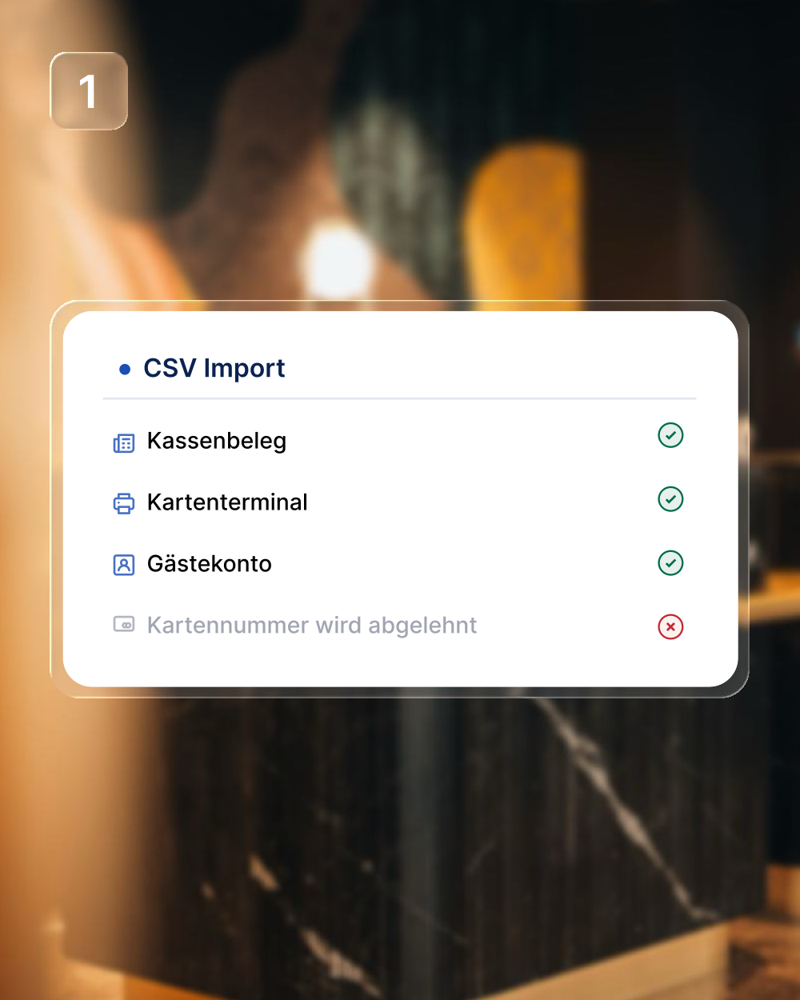
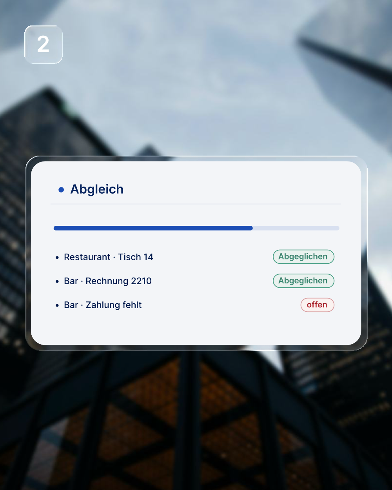
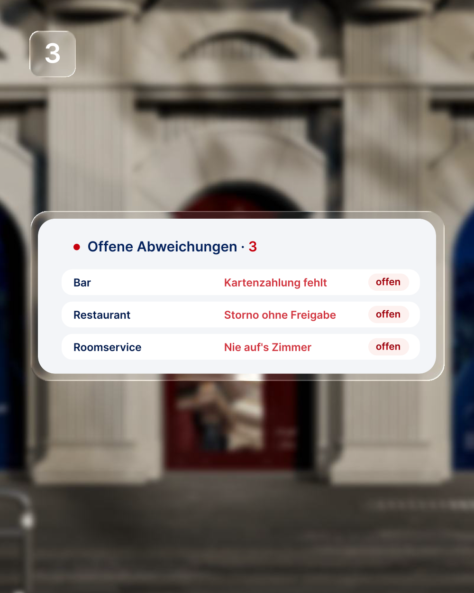

Exporte einlesen
Kassenbelege, Terminal-Abschluss und Gästekonten: die Dateien, die Ihre Systeme ohnehin erzeugen. An der Kasse ändert sich für Ihr Team nichts.
Closewise prüft den Abend gegen Kartenterminal, Gästekonten und Kassenzählung, und legt Ihrer Schichtleitung die kurze Liste hin.
Closewise liest Ihre Exporte, gleicht jeden Beleg ab und legt der Schichtleitung nur die Abweichungen hin. Was in jedem Schritt passiert, sehen Sie hier.

Kassenbelege, Terminal-Abschluss und Gästekonten: die Dateien, die Ihre Systeme ohnehin erzeugen. An der Kasse ändert sich für Ihr Team nichts.

Jeder Beleg wird gegen die anderen Quellen gehalten: Betrag gegen Betrag, Buchung gegen Konto. Was übereinstimmt, wird abgehakt.

Übrig bleiben 3–7 offene Punkte je Nacht, jeder mit Outlet, Beleg und Ursache. Den Rest hat Closewise schon abgehakt.
Ein Nachtabschluss für jeden Betrieb im Haus, vom Restaurant bis zur Bankett-Etage.
Vier Quellen je Nacht abgeglichen, die kurze Liste liegt der Schichtleitung morgens vor.
Mehr erfahrenHeute liest die Schichtleitung jeden Bon einzeln nach. Closewise übernimmt genau das.
Alle Exporte des Abends: Kassenbelege, Kartenterminal, Gästekonten, gezählte Lade.
Betrag gegen Betrag, Buchung gegen Konto. Was passt, ist abgehakt.
Was übrig bleibt, nach Tragweite sortiert, mit Beleg und nächstem Schritt.
Vierzehn Belege, elf gehen auf. Zu den übrigen drei steht da, welche Quellen auseinanderlaufen, um welchen Betrag es geht und was als Nächstes zu tun ist. Ihre Schichtleitung liest drei bis sieben Punkte statt vierzig Bons.
Demodaten · Beträge aus einer beispielhaften Nacht.
Stellen Sie Ihr Haus ein und sehen Sie, wie viel Handarbeit heute im Nachtabschluss steckt.
Gerechnet mit 2,5 Minuten fürs Öffnen und 1,5 Minuten je Abweichung bei vier Abweichungen in einer normalen Nacht, also 8,5 Minuten je Outlet, an 360 Nächten im Jahr. Eine Schätzung nach Ihren Angaben, keine Zusage.
Closewise ersetzt keins Ihrer Systeme. Es liest, was sie erzeugen, und prüft, ob es zusammenpasst, in derselben Nacht.
Nein. Closewise liest die Exporte, die Ihre Systeme ohnehin erzeugen, die Belege aus den Outlets, den Terminal-Abschluss und die Buchungen auf den Gästekonten. An der Kasse ändert sich nichts.
Ihre Schichtleitung öffnet die Liste und klärt die Abweichungen, in einer typischen Nacht drei bis sieben Punkte. Die Kassenzählung bleibt Handarbeit: Wie viel in der Lade liegt, trägt ein Mensch ein.
Dann prüft Closewise gegen die übrigen und sagt nichts zu der fehlenden. Ohne Anbindung an die Gästekonten werden Zimmerbuchungen also nicht als Fehler markiert, sondern gar nicht bewertet.
Belegdaten: Beträge, Zahlarten, Zeitpunkte, Tische und Zimmernummern. Keine vollständigen Kartennummern: ein Import, der welche enthält, wird abgelehnt.
Die Konditionen besprechen wir persönlich im Termin, abgestimmt auf Ihr Haus und die Zahl der Outlets.
Ja. In der Demo können Sie selbst einen Abschluss mit Beispieldaten laufen lassen. Im Termin gehen wir gemeinsam durch, wie das mit den Exporten aus Ihrem Haus aussieht.
Wir zeigen Ihnen einen Nachtabschluss von vorn bis hinten und gehen gemeinsam durch, was die Exporte aus Ihrem Haus dafür liefern müssen.